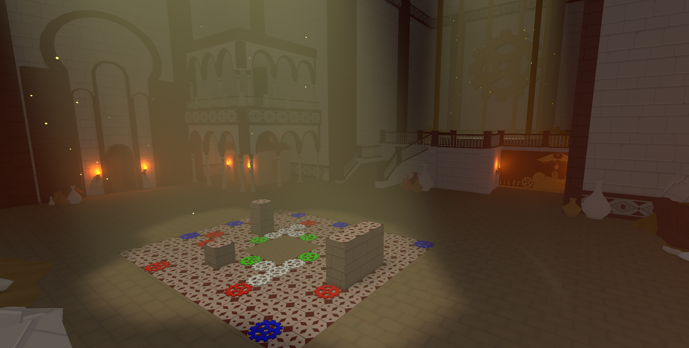
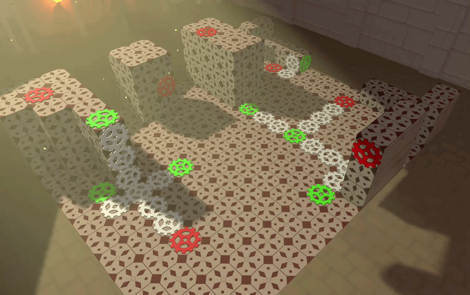
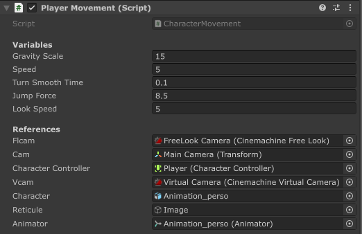

Présentation

| Informations : |
| Moteur : Unity |
| Type de projet : Projet scolaire |
| Mon rôle: Game Programmer |
| Taille du groupe : 5 personnes |
| Temps de développement : 4 mois |
Forgotten Gears est un projet semestriel de ma seconde année de bachelor à l'ICAN Lille. Dans Forgotten Gears, le joueur doit compléter des systèmes d'engrenages et explorer son environnement pour découvrir l'histoire d'un ancien peuple.
Système d'engrenages

Pour centraliser le système, j'ai implémenter un manager qui gère la rotation des engrenages. Celui-ci appelle la fonction de rotations de tout les moteurs, et appelle recursivement la fonction de rotation de tout les engrenages attachés. Utiliser un manager permet de garder en mémoire quel rouages à déja tourné afin de ne pas appeler la même logique plusieurs fois sur le même rouage. De plus, cela permet de bloquer la chaîne si 2 rouages tournant dans le même sens sont adjacents.
Custom Character Controller

Pour ce projet, j'ai créée un Character Controller custom. Le Controller implémente les features suivantes :
| - Detection des collisions |
| - Gestion des sauts |
| - Paramètres de customisation |
Le but de ce custom controller était d'avoir la main mise sur le fonctionnement du personnage et de pouvoir se démarquer des déplacements de base présent dans Unity. Pour cela , la présence de multiples paramètres est essentiel.